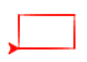
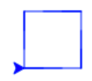
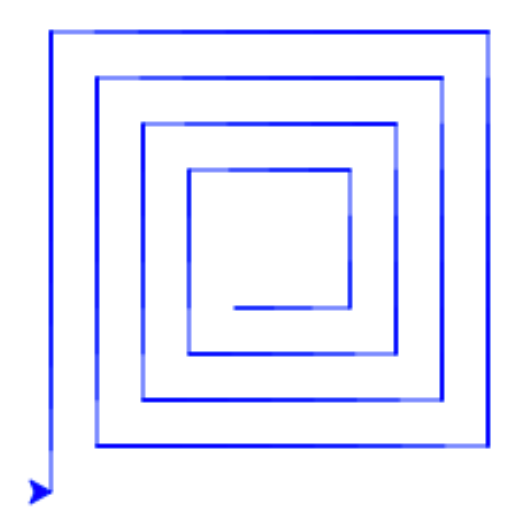
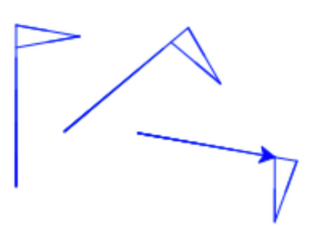
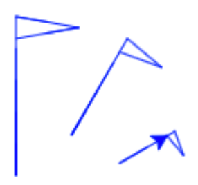
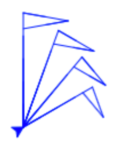
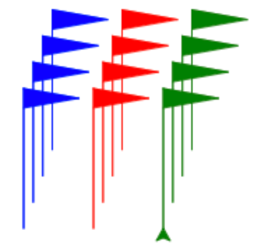

Sköldpadda
bra första-uppgift, sköldpaddsgrafik, sekvens, for-loop, funktionsdefinitioner och anrop, geometri, vinklar- 1. Komma igång
- 2. Rektangel
- 3. Kvadrat
- 4. Spiral
- 5. Figur
- 6. Hoppa
- 7. Skalbar figur
- 8. Neutral figur
- 9. Dekor
Vill du rita snygga & coola saker med en programmerbar sköldpadda? Då är detta uppdraget för dig!
1. Komma igång
Börja med att öppna två fönster, sida vid sida. Ett för detta uppdrag, och ett för Python-turtle
Tips! För att få fönstren sida vid sida kan du 1) göra detta fönster smalare, som halva skärmbredden, 2) öppna python-turtle i en ny flik, 3) dra fliken till sidan, så blir den ett nytt fönster.
Uppdrag: Titta igenom videon (1 minut, inget ljud).
2. Rektangel
Vi börjar med att låta paddan göra några saker i sekvens. Här är ett enkelt exempel där paddan går en liten tur:
import turtle
t = turtle.Turtle()
t.color("red")
t.forward(75)
t.left(90)
t.forward(100)
t.right(90)
Kör programmet och se vad som händer. Kan du lista ut vad varje rad gör? Prova att ändra ett värde och se hur beteendet förändras. Prova tills du förstår vad forward, left och right gör.
Uppdrag: Kan du få paddan att rita en rektangel?

Tips! Om du tycker paddan ritar för långsamt, lägg till ett anrop t.speed(10) för att rita snabbare.
3. Kvadrat
Ibland vill vi låta paddan repetera en sekvens av saker. Här är ett enkelt exempel där sköldpaddan repeterar en liten sekvens med hjälp av en for-loop.
import turtle
t = turtle.Turtle()
t.color("blue")
for c in range(3):
t.forward(25)
t.left(90)
t.forward(20)
t.right(90)
Prova programmet och se vad som händer. Prova att ändra olika saker i programmet. Kan du få paddan att repetera fler gånger? Kan du rita en annan slags figur genom att ändra innehållet i for-loopen?
Obs! Som du ser är innehållet i loopen indraget några blanksteg. Detta är Pythons sätt att hålla reda på vad som ingår i loopen. Du kan använda hur många blanksteg du vill, det viktiga är att det är lika många blanksteg för varje sats i loopen. Här har vi använt 2 blanksteg.
Uppdrag: Kan du rita en kvadrat på ett smart sätt med hjälp av en for-loop?

Tips
for c in range(4): t.forward(75) t.left(90)
4. Spiral
Variabeln c i for-loopen är ett heltal som ändrar värde för varje varv i loopen. Prova att se vad värdet på loop-variabeln är genom att lägga till
t.write(c)
inuti loopen.
Uppdrag: Kan du rita en fyrkantig spiral på ett smart sätt genom att använda c för att låta paddan gå lite längre efter varje sväng?

Tips
for c in range(16): t.forward(75+10*c) t.left(90)
5. Figur
Genom att definiera en funktion kan du göra egna byggblock som du kan använda på flera ställen.
Här definierar vi en funktion som ritar en liten vimpel, och gör sedan ett anrop av funktionen:
import turtle
t = turtle.Turtle()
t.color("blue")
def vimpel() : # Definition av vimpel
t.forward(100)
t.right(100)
t.forward(40)
t.right(160)
t.forward(40)
t.right(100)
vimpel() # Anrop av vimpeln
Obs! Som du ser är innehållet i definitionen indraget några blanksteg, så att Python skall veta vilka satser som ingår i definitionen. Anropet ingår inte i definitionen, utan ligger ute i vänsterkanten. Blankrader betyder ingenting, utan är bara till för att programmet skall bli lättare att läsa.
Vi kan prova att rita ut vimpeln på flera ställen. För att hoppa till olika ställen får vi be paddan dra upp sin penna.
t.setheading(90)
vimpel()
t.right(120)
t.penup()
t.forward(70)
t.pendown()
t.left(120)
vimpel()
Uppdrag: Kan du lägga till en funktion figur som ritar en enkel figur? T.ex. bokstaven L, eller något du hittar på själv. Prova att rita ut den på flera ställen.

Tips! Om du har flera funktioner kan du lägga dem efter varann, och anropen till funktionerna sist i programmet, i följande stil:
def f1():
# innehåll i f1
def f2():
# innehåll i f2
f1() # anrop av f1
f2() # anrop av f2
6. Hoppa
Genom att ge en funktion parametrar blir den mer användbar.
För att slippa lyfta och sänka pennan kan vi definiera följande funktion hop som tar en parameter length för att hoppa en viss längd:
def hop(length) :
t.penup()
t.forward(length)
t.pendown()
Uppdrag: Lägg till funktionen hop ovan. Prova att ersätta din kod som lyfte och sänkte pennan med att anropa hop, t.ex:
t.setheading(90)
figur()
t.right(120)
hop(70)
t.left(120)
figur()
7. Skalbar figur
Uppdrag: Ändra din funktion figur så den tar en parameter h som representerar höjden på figuren. Rita alla delar skalenligt. Låt 100 motsvara att figuren ritas ut i skala 1:1. Anropa din funktion med olika värden på h.

Tips
Multiplicera sträckor medh och dividera med 100. Dvs i stället för att skriva forward(60), skriv forward(60*h/100.0).
8. Neutral figur
Lägg till nedanstående funktion jumpTo som flyttar paddan till läget (x,y), utan att rita:
def jumpTo(x, y) :
t.penup()
t.setpos(x,y)
t.pendown()
Prova att anropa jumpTo i stället för hop för att rita figuren på flera ställen.
Det kan vara praktiskt att en ritfunktion är både rotations- och positionsneutral, dvs att sköldpaddans position och riktning är oförändrad efter ett anrop till funktionen. Detta kan du åstadkomma genom att spara positionen och riktningen innan du ritar, och återställa dem efteråt:
x = t.xcor() # spara x-koordinaten i variabeln x
y = t.ycor() # spara y-koordinaten i variabeln y
v = t.heading() # spara vinkeln i variabeln v
# rita ...
jumpTo(x,y) # hoppa tillbaka
t.setheading(v) # återställ riktningen
Uppdrag: Ändra din funktion figur så den blir rotations- och positionsneutral.
Prova att du lyckades genom att omväxlande anropa figur och right.

9. Dekor
Uppdrag: Skriv en funktion dekor som anropar figur några gånger för att få ett intressant mönster. Prova med olika vinklar och olika storlekar. Prova att flytta paddan på olika sätt mellan anropen till figur. Du kan använda loopar och extra funktioner om du vill.

Tips! Figuren ovan har ritats med fill påslaget:
t.fill(True)
# rita ...
t.fill(False)